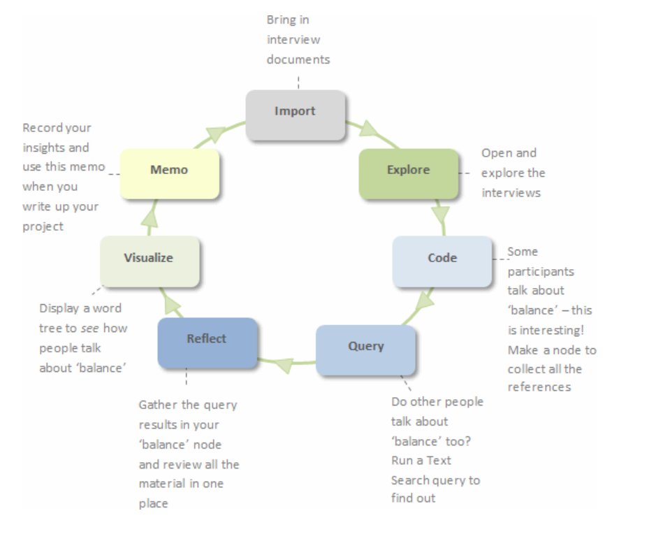

NVIVO Quick Start
A powerful software for the qualitative and mixed-methods analysis
Qualitative research as an iterative process
Handling qualitative data is not usually a step-by-step process. Instead, it tends to be an iterative process where you explore, code, reflect, memo, code some more, query and so on. For example, this picture shows a path you might take to investigate an interesting theme:
Ways to get started with your project
Since projects (and researchers) are unique there is no one 'best practice' approach to organizing and analyzing your data but there are some useful strategies to help you get up and running:
1. Start now - don't wait until you have collected all the data. Import your research design, grant application or thesis proposal.
2. Make a project journal and state your research questions and record your goals. Why are you doing the project? What is it about? What do you expect to find and why?
3. Make a mind map for your preliminary ideas. Show the relationships or patterns you expect to find in your data based on prior experience or preliminary reading.
4. Import your interviews, field notes, focus groups —organize these files into folders for easy access.
5. Set up an initial node structure based on your early reading and ideas—you could run a Word Frequency query over your data to tease out the common themes for creating your node structure.
6. Set up cases for the people, places or other cases in your project.
7. Explore your material and code themes as they emerge—create memos and describe your discoveries and interpretations.
8. To protect your work, get in the habit of making regular back-ups.
Working toward outcomes that are robust and transparent
You can demonstrate the credibility of your findings in the following ways:
1. If you used NVivo for your literature review, run a query or create a chart to demonstrate how your findings compare with the views of other authors.
2. Was an issue or theme reported by more than one participant? Run a Matrix Coding query to see how many participants talked about a theme.
3. Were multiple methods used to collect the data (interviews, observations, surveys)—and are the findings supported across these data files? Run a Matrix Coding query to see how often a theme is reported across all your files.
4. If multiple researchers analyzed the material—were their findings consistent? Use coding stripes (or filter the contents in a node) to see how various team members have coded the material and run a Coding Comparison query to assess the level of agreement.